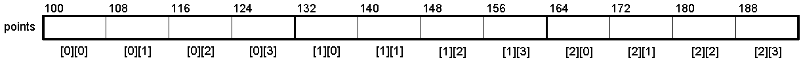
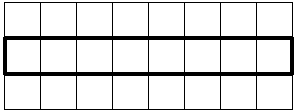
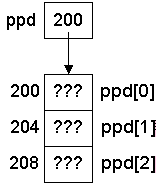
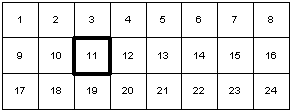

Multidimensional Arrays
An array with more than one dimension is called a multidimensional array.Building up multidimensional arrays:int matrix[5][10]; /* array of 5 arrays of 10 int; a 5x10 array of int */
int a; /* int */ int b[10]; /* array of 10 int */ int c[5][10]; /* array of 5 arrays of 10 int */ int d[3][5][10]; /* array of 3 arrays of 5 arrays of 10 int */ int e[10][5][3]; /* array of 10 arrays of 5 arrays of 3 int */
Given this declaration of points:Storage order: Arrays in C are stored in row major order. This means that the rightmost subscript varies the most rapidly.
double points[3][4];
With details:
Or draw it contiguously (as it really is in memory):
Or horizontally:

Giving concrete values to the 2D array of doubles will help visualize the arrays. Note how the initialization syntax helps us visualize the "array of arrays" notion:
double points[3][4] = {{1, 2, 3, 4}, {5, 6, 7, 8}, {9, 10, 11, 12}};
double points[3][4] = {
{1.0, 2.0, 3.0, 4.0},
{5.0, 6.0, 7.0, 8.0},
{9.0, 10.0, 11.0, 12.0}
};
Some expressions involving points (on a 64-bit computer):
C code to display above tables.Addresses Type -------------------------------------------------------------------------------- points = 0x7fffa50f0200 An array of 3 arrays of 4 doubles &points = 0x7fffa50f0200 A pointer to an array of 3 arrays of 4 doubles points[0] = 0x7fffa50f0200 An array of 4 doubles &points[0] = 0x7fffa50f0200 A pointer to an array of 4 doubles *points = 0x7fffa50f0200 An array of 4 doubles &points[0][0] = 0x7fffa50f0200 A pointer to a double Contents ------------------------ **points = 1.000000 *points[0] = 1.000000 points[0][0] = 1.000000 Sizes ------------------------- sizeof(points) = 96 sizeof(*points) = 32 sizeof(points[0]) = 32 sizeof(**points) = 8 sizeof(points[0][0]) = 8 sizeof(&points) = 8
Notes:
Accessing Elements in a 2-D Array
short matrix[3][8]; /* 24 shorts, 3x8 array */




Remember the rule:
matrix[1][2] *(*(matrix + 1) + 2)
where:array[i] == *(array + i)
Pointer arithmetic is used to locate each element (base address + offset) and is done by the compiler. If you look at the assembly code that is generated, you will see all of the pointer arithmetic that is being done for each access.array[i][j] == *(*(array + i) + j) array[i][j][k] == *(*(*(array + i) + j) + k) etc...
Given this declaration:
The value of sizeof varies with the argument:short matrix[3][8];
Sizes ------------------------- sizeof(matrix) = 48 ; entire matrix sizeof(matrix[0]) = 16 ; first row sizeof(matrix[1]) = 16 ; second row sizeof(matrix[0][0]) = 2 ; first short element
Dynamically Allocated 2D Arrays
Recall the 2D points static array and how a dynamically allocated array would look:
double points[3][4]; |
double *pd = (double *)malloc(3 * 4 * sizeof(double)); |
Given a row and column:
int row = 1, column = 2; double value;
value = points[row][column]; /* OK */ value = pd[row][column]; /* ILLEGAL */
value = pd[row * 4 + column];
value = *(address-of-pd + (row * 4 + column) * sizeof(double));
Why can't we just cast pd to a two-dimensional array and have the compiler do the pointer arithmetic for us?
Using these definitions from above:
Create a variable that is a pointer to a pointer to a double/* Assume these values are chosen at runtime. */ int ROWS = 3; int COLS = 4; /* Dynamically allocate the memory */ double *pd = malloc(ROWS * COLS * sizeof(double));
Allocate an array of 3 (ROWS) pointers to doubles and point ppd at it:double **ppd;
ppd = malloc(ROWS * sizeof(double *));
Point each element of ppd at an array of 4 doubles:
Of course, for a large array, or an array whose size is not known at compile time, you would want to set these in a loop:ppd[0] = pd; ppd[1] = pd + 4; ppd[2] = pd + 8;
This yields the diagram (32-bit computer):int row; for (row = 0; row < ROWS; row++) ppd[row] = pd + (COLS * row);
Given a row and column, we can access elements through the single pointer or double pointer variable:
We could make the code easier by creating a helper function that will allocate a 2D array of doubles of any size:int row = 1, column = 3; double value; /* Access via double pointer (array of arrays) using subscripting */ value = ppd[row][column]; /* Access via single pointer using pointer arithmetic */ /* and/or subscripting. These statements are all equivalent. */ value = pd[row * COLS + column]; value = *(pd + row * COLS + column); value = (pd + row * COLS)[column];
double **allocate_2D(int rows, int cols)
{
int i; /* Loop variable */
double **pointers; /* The pointers for each row */
double *array; /* The actually array of ints */
/* Allocate memory for the rows X cols array */
array = (double *) malloc(rows * cols * sizeof(double));
/* Allocate the array of pointers, one per row */
pointers = malloc(rows * sizeof(double *));
/* Point each pointer at its corresponding row */
for (i = 0; i < rows; i++)
pointers[i] = array + (cols * i);
return pointers;
}
void print2D(double **ppd, int rows, int cols)
{
int i, j;
for (i = 0; i < rows; i++)
{
for (j = 0; j < cols; j++)
printf("%8.2f", ppd[i][j]);
printf("\n");
}
}
int i, j;
int rows = 3, cols = 4;
double **ppd = allocate_2D(3, 4);
/* Do something with the array ... */
for (i = 0; i < rows; i++)
for (j = 0; j < cols; j++)
ppd[i][j] = i * cols + j + 1;
print2D(ppd, rows, cols);
free(*ppd); /* Free the array of 12 doubles (Must do this first!) */
free(ppd); /* Free the pointers to each row */
1.00 2.00 3.00 4.00
5.00 6.00 7.00 8.00
9.00 10.00 11.00 12.00
You can't just create a 1D array and then cast it to a 2D array. The reason is that casting is done at compile-time, so the compiler needs to know how many columns there are. If you don't know the size until run-time, you need to do it this way.
Passing 2D Arrays to Functions
Putting values in the matrix and printing it:Implementations:Fill3x8Matrix(matrix); /* Put values in the matrix */ Print3x8Matrix(matrix); /* Print the matrix */
void Fill3x8Matrix(short matrix[][8])
{
int i, j;
for (i = 0; i < 3; i++)
for (j = 0; j < 8; j++)
matrix[i][j] = i * 8 + j + 1;
}
void Print3x8Matrix(short matrix[][8])
{
int i, j;
for (i = 0; i < 3; i++)
for (j = 0; j < 8; j++)
printf("%i ", matrix[i][j]);
printf("\n");
}
or (the number 3 in the [] is ignored)void Fill3x8Matrix(short (*matrix)[8]) void Print3x8Matrix(short (*matrix)[8])
Why are they not declared like this?:void Fill3x8Matrix(short matrix[3][8]); void Print3x8Matrix(short matrix[3][8]);
This is the error from gcc:void Fill3x8Matrix(short matrix[][]); void Print3x8Matrix(short matrix[][]);
error: array type has incomplete element type 'short int[]'
void Fill3x8Matrix(short matrix[][])
^~~~~~
note: declaration of 'matrix' as multidimensional array must have bounds for all dimensions except the first
In function 'Fill3x8Matrix':
The compiler needs to know the size of each element in each dimension. It doesn't need to (and can't) know the number of elements in the first dimension. The size of each element in the first dimension is determined by the other dimensions and the type of the elements.
void Test(int a[], int b[][6], int c[][3][5])
{
printf("a = %p, b = %p, c = %p\n", (void *)a, (void *)b, (void *)c);
a++;
b++;
c++;
printf("a = %p, b = %p, c = %p\n", (void *)a, (void *)b, (void *)c);
}
Output:
a = 0012FEE8, b = 0012FF38, c = 0012FEFC
a = 0012FEEC, b = 0012FF50, c = 0012FF38
The function Test is equivalent to this:Output: a = 1244904, b = 1244984, c = 1244924 a = 1244908, b = 1245008, c = 1244984
Other methods for filling the matrix use explicit pointer arithmetic:void Test(int *a, int (*b)[6], int (*c)[3][5])
void Fill3x8Matrix(short matrix[][8])
{
int i, j;
for (i = 0; i < 3; i++)
for (j = 0; j < 8; j++)
*(*(matrix + i) + j) = i * 8 + j + 1;
}
void Fill3x8Matrix(short matrix[][8])
{
int i, j;
for (i = 0; i < 3; i++)
{
short *pmat = *(matrix + i);
for (j = 0; j < 8; j++)
*pmat++ = i * 8 + j + 1;
}
}
matrix[1][2];
Using address offsets we get:
&matrix[1][2] ==> &*(*(matrix + 1) + 2) ==> *(matrix + 1) + 2
We can calculate the size of any portion:short matrix[3][8] short array[10]
Recap:Expression Meaning Size (bytes) ----------------------------------------------------------- array Entire array 20 array[N] Element in 1st dimension 2 matrix Entire array 48 matrix[N] Element in 1st dimension 16 matrix[N][M] Element in 2nd dimension 2